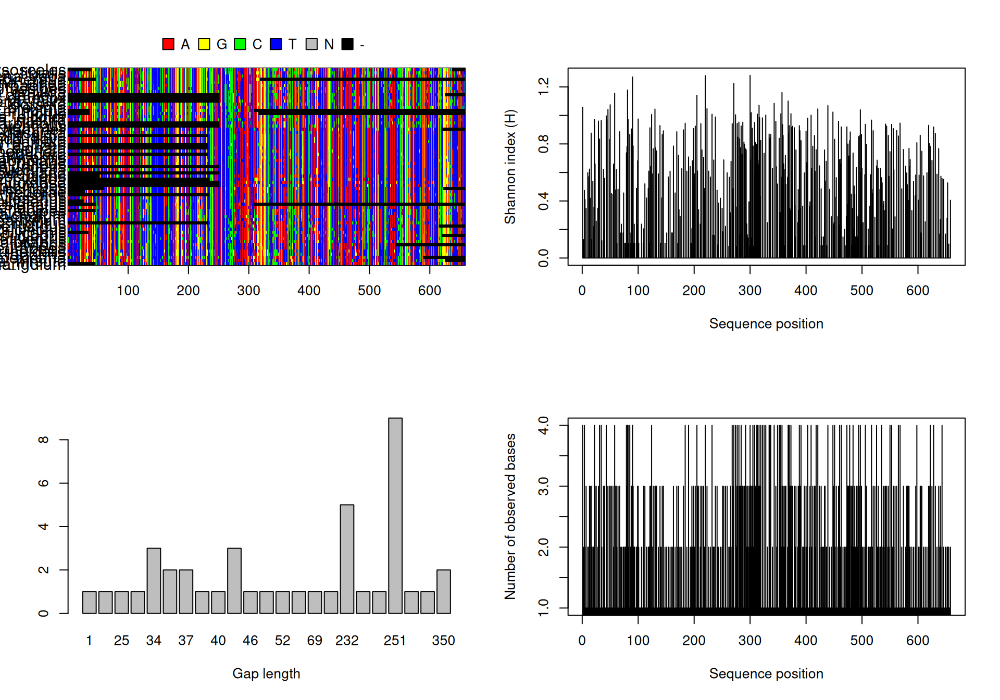
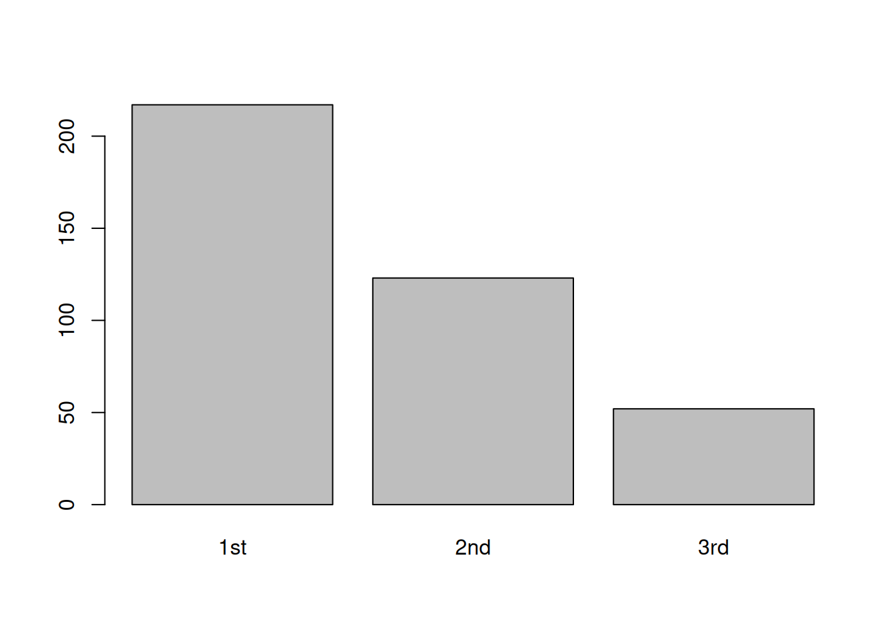
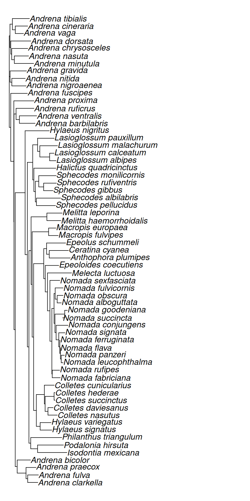

library(ape)14 Phylogenetic reconstruction using distance methods.
For many reasons distance based methods in phylogenetics are very prone to systematic biases and generally regarded inferior to character based methods. Distance based methods are still used widely, e.g., as a quick & dirty explorative technique or to generate starting trees for other methods. We will use the the R package ape to create a neighbor joining tree.
You know your way around R, so most of this will be familiar.
14.1 Reading in and checking the alignment using ape
Let’s open R and load the ape package.
We can now load the alignment file and make some checks
# read the fasta alignment
coi <- read.dna("data/coi_ali.fas", format = "fasta")
# check if successful
checkAlignment(coi)
Number of sequences: 63
Number of sites: 658
Some gap lengths are not multiple of 3: 1 22 25 28 34 37 40 44 46 47 52 59 232 233 251 343 350
Frequencies of gap lengths:
1 22 25 28 34 36 37 39 40 44 46 47 52 59 69 117 232 233 234 251
1 1 1 1 3 2 2 1 1 3 1 1 1 1 1 1 5 1 1 9
339 343 350
1 1 2
=> length of gaps on the left border of the alignment: 37 0 46 251 36 232 52 234 59 28 233 25 47 44 34 1
=> length of gaps on the right border of the alignment: 350 350 343 339 117 69 44 40 39 37 34 34 22
Number of unique contiguous base segments defined by gaps: 22
Number of segment lengths not multiple of 3: 11
=> on the left border of the alignement: 3
=> on the right border : 4
=> positions of these segments inside the alignment: 38..636 252..624 37..308 60..621
Number of segregating sites (including gaps): 392
Number of sites with at least one substitution: 392
Number of sites with 1, 2, 3 or 4 observed bases:
1 2 3 4
266 166 151 75 
This looks all good and as expected.
Please note that the alignment is stored as a matrix. This means we can use the same tools we have learned about earlier in the course to access and modify the alignment.
For example, to only look at the first 100bp of the first 10 taxa, simply run
coi[1:10, 1:100]10 DNA sequences in binary format stored in a matrix.
All sequences of same length: 100
Labels:
Andrena_chrysosceles
Andrena_tibialis
Andrena_vaga
Andrena_cineraria
Andrena_nitida
Andrena_nigroaenea
...
Base composition:
a c g t
0.356 0.173 0.173 0.297
(Total: 1 kb)We can also determine the diversity of the alignment at the different codon positions. Consider this example
# extract each codon position into a new alignment
firstpos <- coi[, seq(from = 1, by = 3, to = ncol(coi))]
secondpos <- coi[, seq(from = 2, by = 3, to = ncol(coi))]
thirdpos <- coi[, seq(from = 3, by = 3, to = ncol(coi))]
# determine how many sites each are not conserved across all positions
div1 <- length(seg.sites(firstpos))
div2 <- length(seg.sites(secondpos))
div3 <- length(seg.sites(thirdpos))
# generate named vector from results
poswisedivs <- c(div1, div2, div3)
names(poswisedivs) <- c("1st", "2nd", "3rd")
# plot
barplot(poswisedivs)
What does this tell you about the reading frame in your alignment? Check if your assumption is correct in Aliview!
14.2 Calculating the neighbor joining tree
The first step in any distance based method is the creation of a distance matrix. To this end, we need to calculate phylogenetic distances between all pairs of sequences in our alignment.
# calculate distance matrix – we could specify a model of sequence evolution here, but will use the raw distances for now
coi.mat <- dist.dna(coi, model = "raw", pairwise.deletion = TRUE)
# have a look at the distance matrix (only display first 10 rows & 5 columns)
as.matrix(coi.mat)[1:10, 1:5] Andrena_chrysosceles Andrena_tibialis Andrena_vaga
Andrena_chrysosceles 0.0000000 0.13775510 0.13210702
Andrena_tibialis 0.1377551 0.00000000 0.12982998
Andrena_vaga 0.1321070 0.12982998 0.00000000
Andrena_cineraria 0.1172161 0.09558824 0.07692308
Andrena_nitida 0.1371237 0.13292117 0.12765957
Andrena_nigroaenea 0.1254181 0.14374034 0.13221884
Andrena_fuscipes 0.1421405 0.13755796 0.14589666
Andrena_gravida 0.1254181 0.14374034 0.12613982
Andrena_clarkella 0.1720430 0.16483516 0.15549598
Andrena_praecox 0.1770833 0.17632242 0.16707617
Andrena_cineraria Andrena_nitida
Andrena_chrysosceles 0.11721612 0.13712375
Andrena_tibialis 0.09558824 0.13292117
Andrena_vaga 0.07692308 0.12765957
Andrena_cineraria 0.00000000 0.08791209
Andrena_nitida 0.08791209 0.00000000
Andrena_nigroaenea 0.10256410 0.10334347
Andrena_fuscipes 0.10989011 0.13373860
Andrena_gravida 0.12087912 0.11094225
Andrena_clarkella 0.25000000 0.16621984
Andrena_praecox 0.23529412 0.15479115Observe that the size of distance matrix will always be determined by the number of taxa and is not influenced by the number of positions in your alignment!
From this we can now reconstruct a phylogenetic tree. There are various options available, and you may already be familiar with hierarchical clustering algorithms. Neigbor Joining is the most commonly used method for tree reconstruction from DNA sequences based on clustering.
# The output of the nj function is a phylogenetic tree
coi.nj.tree <- nj(coi.mat)
coi.nj.tree
Phylogenetic tree with 63 tips and 61 internal nodes.
Tip labels:
Andrena_chrysosceles, Andrena_tibialis, Andrena_vaga, Andrena_cineraria, Andrena_nitida, Andrena_nigroaenea, ...
Unrooted; includes branch length(s).# this tree can be plotted
plot(coi.nj.tree, no.margin = TRUE)
# but it is better to export it and take a look later
write.tree(coi.nj.tree, "data/COI_NJ.tre")As you may have guessed at this point, there are multiple different tree file formats. We will be using the newick file format, mainly because it is simple and can be read by humans and machines alike. The downside is that not much metadata can be stored using this format. Example of a simple tree (please note the semicolon at the end!):
(((a,b),(c,d)),e);To read the tree, follow the parentheses from inside out: a & b are closest relatives, as are c & d. a+b & c+d are united by the next set of parentheses, and e is the furthest outside. The resulting tree therefore looks like this:
/-- a /---+ | \-- b /---+ | | /-- c | \---+ | \-- d | \---------- eBranch lengths can also be stored using the newick format. The tree we have just saved to disk looks like this:
cat data/COI_NJ.tre((((((((Andrena_clarkella:0.03793042308,Andrena_fulva:0.04002656617):0.006208554979,Andrena_praecox:0.03722621523):0.03291462202,Andrena_bicolor:0.04954187293):0.007225657745,(((((Isodontia_mexicana:0.1093010072,Podalonia_hirsuta:0.09648130568):0.02548389406,Philanthus_triangulum:0.1155825578):0.006695663236,(((((Hylaeus_signatus:0.04330756335,Hylaeus_variegatus:0.04098362438):0.01416345624,(((Colletes_nasutus:0.03494954881,Colletes_daviesanus:0.01929573421):0.01055673006,(Colletes_succinctus:0.003754770216,Colletes_hederae:0.003439474389):0.03336123395):0.002796295485,Colletes_cunicularius:0.03696443129):0.02985969807):0.0101427056,((((((Nomada_fabriciana:0.03002916815,Nomada_rufipes:0.02772159173):0.001368761399,(((((((Nomada_leucophthalma:0.006942628419,Nomada_panzeri:0.0118367143):0.003169805492,Nomada_flava:-0.0008223876521):0.002330886604,Nomada_ferruginata:0.001122457575):0.00381701872,Nomada_signata:0.02321217773):0.009814662959,Nomada_conjungens:0.04436483664):0.004295624941,(Nomada_succincta:-0.007614381512,Nomada_goodeniana:0.01007138397):0.03622586243):0.003452537977,((Nomada_alboguttata:0.01556458855,Nomada_obscura:0.0219940969):0.007506503678,Nomada_fulvicornis:0.02965262128):0.00423029554):0.008100450394):0.007212177037,Nomada_sexfasciata:0.03678430511):0.00911774246,Melecta_luctuosa:0.08976173859):0.008273234502,Epeoloides_coecutiens:0.05027692376):0.005602424146,((Ceratina_cyanea:0.07165181973,Anthophora_plumipes:0.07822533014):0.009971414203,Epeolus_schummeli:0.07111294455):0.01049365998):0.03769645362):0.005469236369,(Macropis_fulvipes:0.03583557437,Macropis_europaea:0.02712738859):0.06123857798):0.004000420205,(Melitta_haemorrhoidalis:0.05206633079,Melitta_leporina:0.05735616161):0.05882258335):0.008031882647):0.00585270542,((((Sphecodes_pellucidus:0.07099590708,Sphecodes_albilabris:0.09024187793):0.003993983912,((Sphecodes_gibbus:0.03477631432,Sphecodes_rufiventris:0.04761463883):0.01818620717,Sphecodes_monilicornis:0.06443370358):0.01263176106):0.005503990579,Halictus_quadricinctus:0.08194419011):0.004349517682,(((Lasioglossum_albipes:0.02397005069,Lasioglossum_calceatum:0.01674656168):0.03654527748,Lasioglossum_malachurum:0.06593930218):0.008299880436,Lasioglossum_pauxillum:0.06163616107):0.01815370924):0.01994318425):0.008363308522,Hylaeus_nigritus:0.09032225511):0.03675728699):0.004694871292,((Andrena_barbilabris:0.0584486813,Andrena_ventralis:0.06440144155):0.01245351575,Andrena_ruficrus:0.06674642282):0.007775616838):0.00054511563,Andrena_proxima:0.07491713868):0.01146065374,Andrena_fuscipes:0.0622328689):0.005542362885,((Andrena_nitida:0.05000066183,Andrena_nigroaenea:0.05334280321):0.006493494734,Andrena_gravida:0.0611356846):0.003032856579,((((Andrena_minutula:0.07182900939,Andrena_nasuta:0.05317099061):0.009780251298,Andrena_chrysosceles:0.05984836932):0.003518142377,Andrena_dorsata:0.07479486746):0.002907434525,((Andrena_vaga:0.03063052226,Andrena_cineraria:0.04629255467):0.01078510112,Andrena_tibialis:0.06346247033):0.00900205477):0.002678477105);
Exercises
Change the model in the
dist.dnacommand. Determine if specifying a model increases or decreases the average nucleotide distances.Repeat the above steps for the LW Rhodopsin alignment. What does the analysis of the segragating sites tell you about this locus?